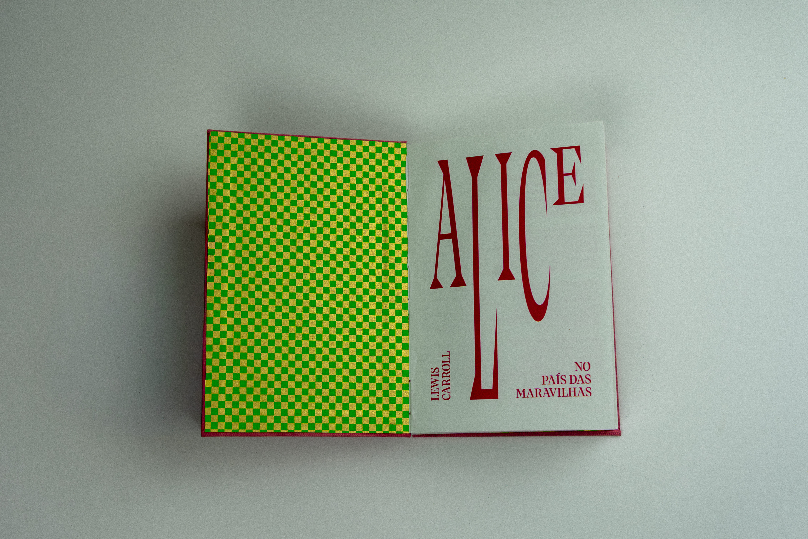
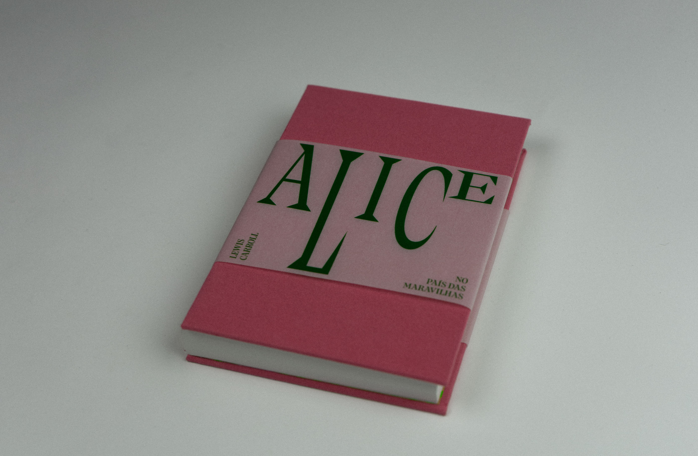
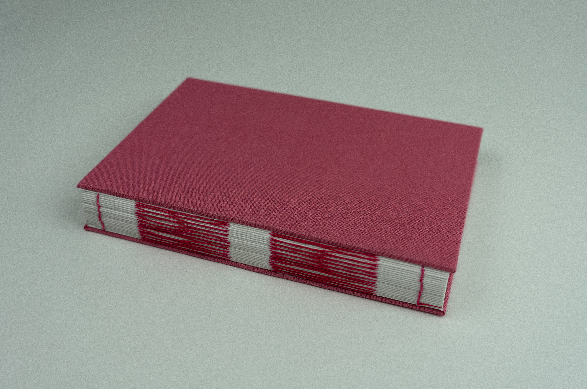
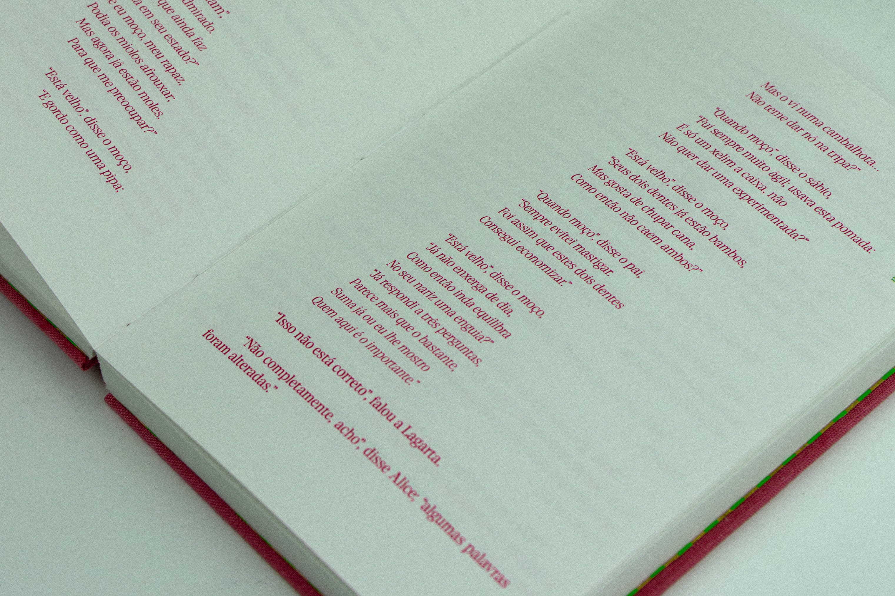
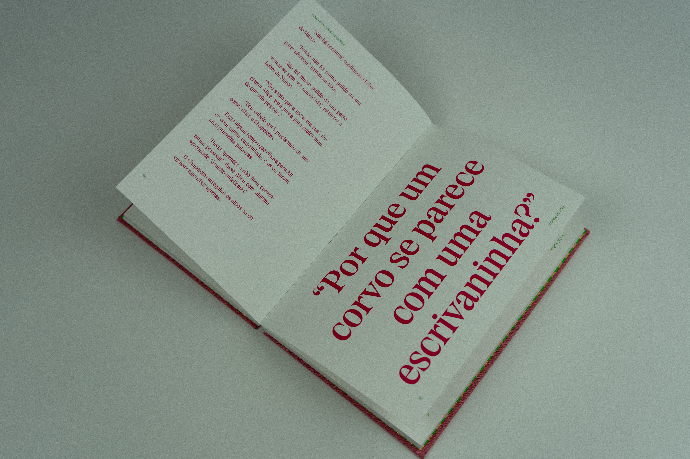
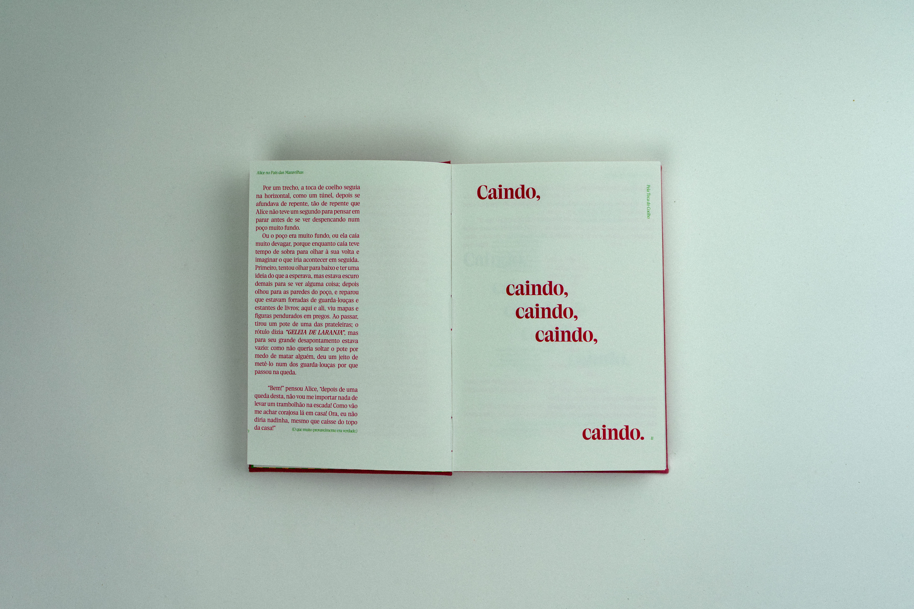

Overview
I’ve always loved Alice, the film, the cartoon, the chaos of it all. So when we were given the freedom to reinterpret any book, I didn’t hesitate. The challenge I set for myself was different though: take a story we associate with bright colors and whimsical illustrations, and find something more solid underneath. Less playful on the surface, but stranger in a way that feels truer to what the story actually is.
The edition I chose was an annotated one, which added a layer of complexity. The annotations needed to coexist with the narrative without competing with it, something the reader could choose to engage with or ignore entirely, without losing the thread of the story. That tension between main text and commentary shaped almost every layout decision.
Typography became the primary visual tool. Rather than illustrating Wonderland, I let the type perform it: shifts in scale, cuts, and misalignments that echo Alice’s constant sense of displacement. The bookbinding was done in French link stitch, a deliberate choice that adds a quiet handmade quality to an otherwise unsettling object.
The result is an editorial piece that doesn’t look like a children’s book. Because it never really was one.






© ellen damazio, 2026 — designed & coded